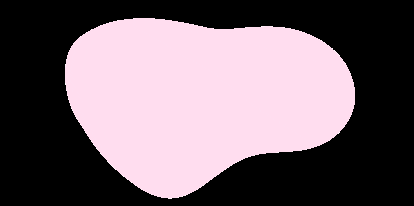
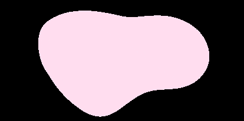
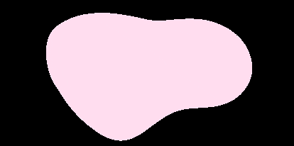
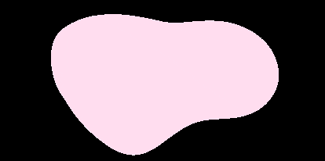

 

Thank you for visiting WWEC. We provide women and nonbinary people with educational resources on all corners of the globe. We connect with both virtual and in-person initiatives in order to make it as easy as possible to create learning oppurtunities for women and nonbinary people. Scroll below to see just some of the amazing organizations we have partnered with. Please visit our contact page to put your own resource on our WWEC!
Kode With Klossy (KWK): KWK is a free computer science camp for female and nonbinary identifying individuals aged 13-18. Camp goers (or scholars, as they are addressed) will be under the instruction of experienced faculty and learn several facets of computer science. Some camp categories include: web devlopment, mobile development, and data science. Camp lasts two weeks, where week 1 is focused on instruction and week 2 allows scholars to apply their learning to a final project. Final day of camp is a demo day. Equipment will be provided to those who do not have access. No prior experience necessary. Participation is application based, and applications open in the spring.
Generation She : Generation She is a global organization that provides resources, events, and a growing community to help high school women become entrepreneurs. Register for their annual Makeathon to get access to a plethora of influential speakers, college scholarships, and assistance in starting your own start up! Check out the Student Biz Marketplace to see the startups made by fellow Generation She participants and see how you can make one yourself.
Women in Natural Sciences (WINS) : WINS is a free afterschool and summer science program for girls who plan to attend a Philidephia public or charter school. Application period is when the student is in 8th grade, as the program begins in the summer after 8th grade. It consists of eight weeks of environmental exploration in and outside of the city, concludeing with a weeklong trip to the Poconos where they can apply the knowledge and skills obtained throughout the summer. During the school year, there are weekly workshops and monthly field trips that allow girls to be directly involved with the scientists, collections, and resources of the Academy.
Asian University for Women (AUW): AUW is an organization that works to help women from impoverished and less-fortunate nations gain an affordable college education that can help them become the leaders of tomorrow. 98% of its students are enrolled on full scholarship. Students have the opportunity to pick from five distinct majors and several minors. This is a great opputunity for women who could never have a college on their radar and can now have a chance at a more fulfilling life.